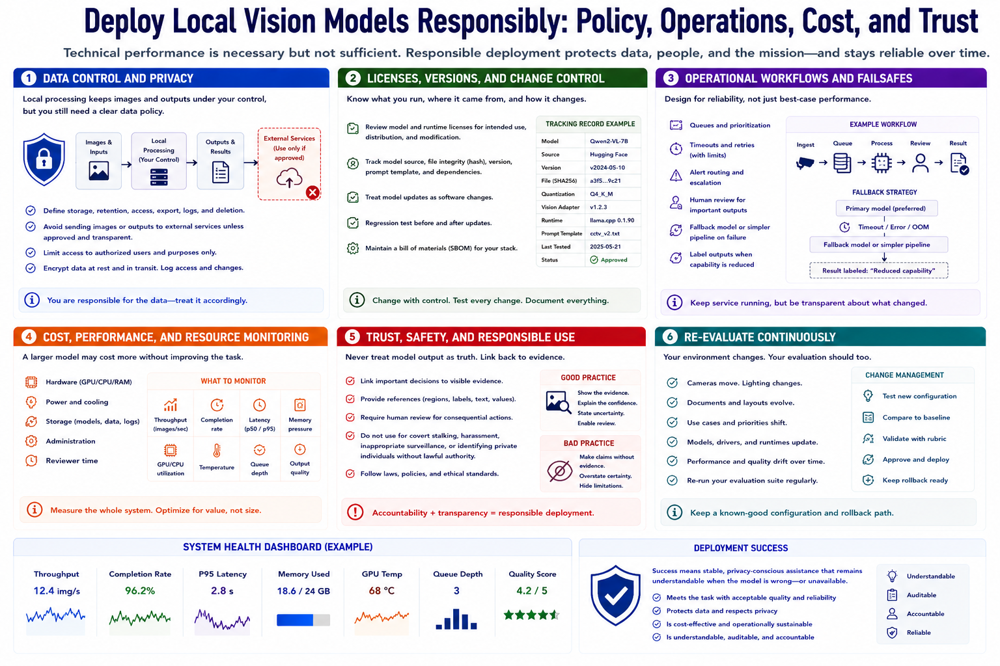

Deployment and Operational Considerations
Connecting to LMS... Progress: in progress

Narration
Local processing can keep images and outputs under direct control, but deployment still needs a data policy. Define storage, retention, access, export, logs, and deletion. Avoid sending images to external services unless that flow is approved and transparent.
Review the model and runtime licenses for the intended use, distribution, and modification. Track model source, file integrity, version, prompt template, and dependencies. Treat model updates as software changes with regression testing.
Operational workflows need queues, timeouts, retries, alert routing, and human review. A fallback model or simpler pipeline can preserve service when the preferred model exceeds memory or fails, but the system should label changed capability.
Cost includes hardware, power, cooling, storage, administration, and reviewer time. A larger model may cost more operationally without improving the task. Monitor throughput, completion, latency, memory pressure, temperature, queue depth, and output quality.
Do not blindly trust model output. Important decisions should link back to visible evidence and accountable review. Local vision systems should not be used for covert stalking, harassment, inappropriate surveillance, or identifying private individuals without lawful authority.
Reevaluate over time as cameras, documents, use cases, models, drivers, and runtimes change. Keep a known-good configuration and rollback path. Deployment success means stable, privacy-conscious assistance that remains understandable when the model is wrong or unavailable.